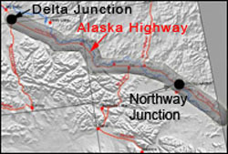

Permafrost degradation due to climate warming and/or surface disturbances (natural or man-made) has severe ecological, engineering and societal implications. For example, melting of ground ice in degrading permafrost can cause substantial differential ground settlement and result in the failure of any overlying structure. Permafrost degradation affects surface hydrology, habitat for vegetation and wildlife, and accelerates coastal erosion.
We are using a combination of field measurements, modeling, and remote sensing to map, monitor and predict the distribution of near-surface permafrost along a section of the proposed gas pipeline corridor in interior Alaska. The study area is a 12 mile-wide zone that stretches for 200 miles from Delta Junction to the Canadian border along the Alaska Highway.
Santosh Panda is completing his Ph.D. research which has two primary objectives.
This research work is a collaboration between UAF and the Alaska Division of Geological and Geophysical Surveys (DGGS). Financial support for graduate research was provided by DGGS, the Alaska Space Grant Program (ASGP), UAF Department of Geology and Geophysics, and UAF Graduate School. Individual research collaborators are Dr. Diana Solie, Torre Jorgenson, and Vladimir Ramonovsky.